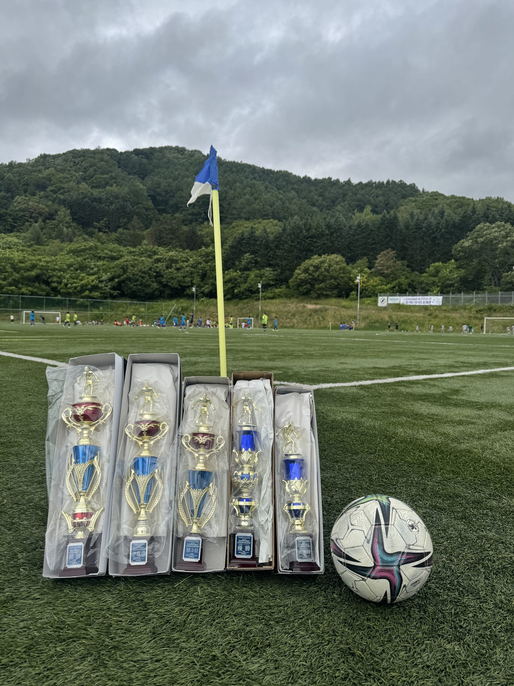
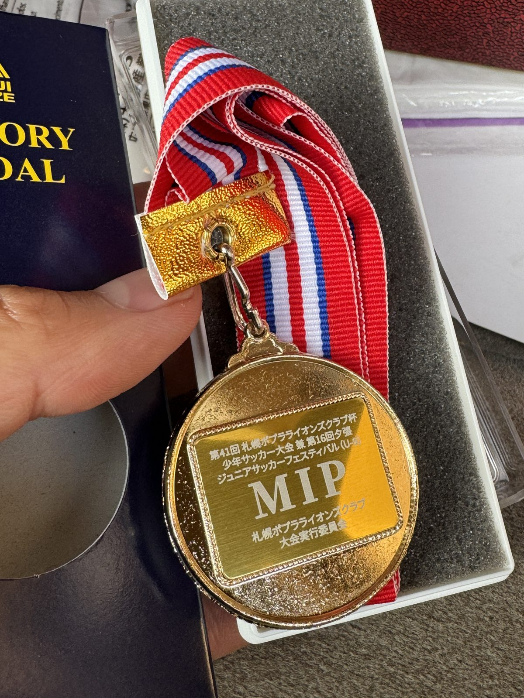
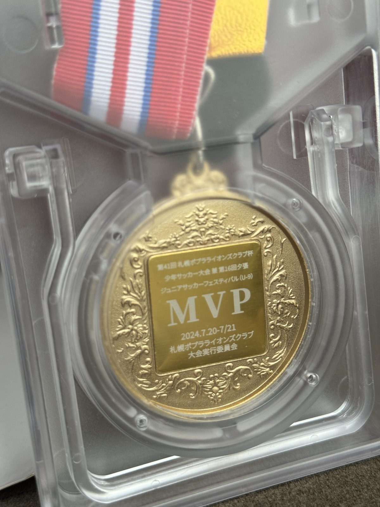
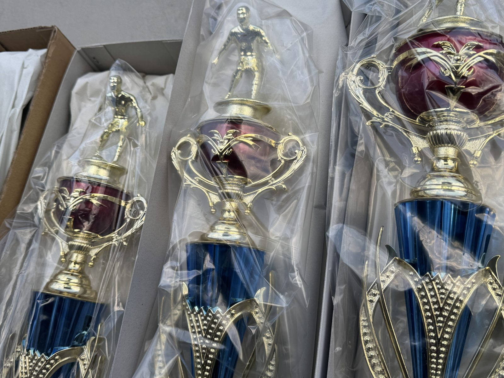
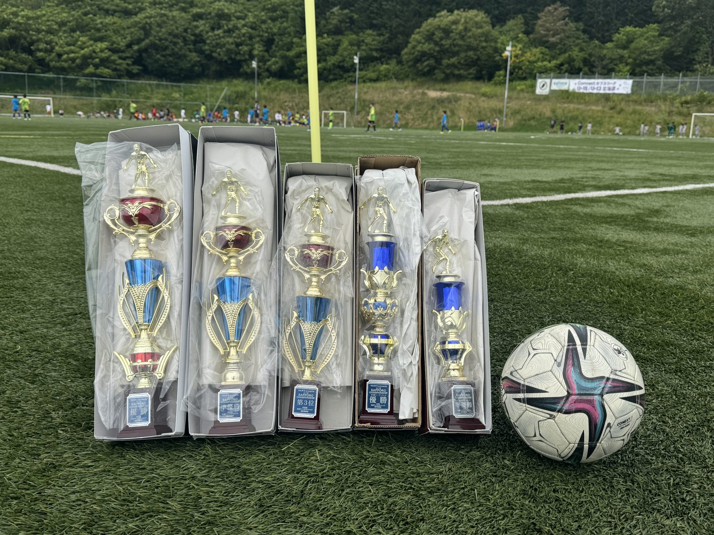

資料を拡大 ↗
資料を拡大 ↗
TROPHY / トロフィー・表彰品
その一瞬を、
残るかたちに。
トロフィー・カップ・楯・メダルの名入れ制作。大会日程・必要数・ご予算をもとに、候補とお見積もりをご案内します。
大会規模別に選べる
個人賞までまとめて相談
開催日から相談

CATALOG
商品ラインナップ
トロフィー・楯・メダルから、贈る相手に合う形を。画像を押すとサイズを記載した資料を拡大できます。


PRICE / お見積もり
ご予算と表彰数から、
一式を組み立てます。
サイズ・個数・名入れによって価格が変わるため、金額は個別にお見積もりします。まずは大会日程と必要数をお知らせください。
- 本体
- 種類・サイズ・個数に合わせて候補を選びます。
- 名入れ
- 大会名・受賞名・日付など、入れたい内容を確認します。
- 納期・配送
- 在庫と加工日程、配送先・送料を確認してご案内します。
PRODUCTION ARCHIVES
大会の記憶に残る、表彰品。
大会名や受賞名を刻んだ、トロフィー・カップ・楯の制作実績です。競技や大会の雰囲気に合わせて、形状と名入れを提案します。



制作写真をもっと見る あと12枚 ＋







HOW TO ORDER
ご相談から、お届けまで。
- 01
大会について相談
開催日・必要数・予算を共有。
- 02
候補と金額を確認
種類・サイズ・名入れ内容を決定。
- 03
内容を確認して製作
表記や日付を確認して進行。
- 04
お届け
確認した日程と配送先へ。
LET’S TALK
大会日程と必要数だけでも、
ご相談ください。
まだ商品が決まっていなくても大丈夫。決まっている項目からお聞かせください。
- 大会名・競技
- 開催日・お届け希望日
- 優勝・入賞・個人賞の数
- ご予算・配送先